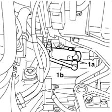
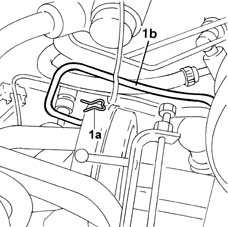

1280B45 RIGID supply PIPE from (pump) - master cylinder R.R. for right hand drive versions
- Path
- Procedures > 18 CLUTCH > 1820 CLUTCH RELEASE CONTROLS > 1820B HYDRAULIC CLUTCH SYSTEM > 1280B45 RIGID supply PIPE from (pump) - master cylinder R.R. for right hand drive versions
- Kind
- repair procedure (removal / refitting; the operation number is the code)
- Applies to
- all engines; all production periods
- Interactive page
- https://sloeber94.github.io/elrnDB-fMltpl/en/#/2891536
Applies to: all engines; all production periods; only with equipment: Right hand drive
 Removing
Removing
 Refitting
RefittingDisconnect the battery negative terminal.
Applies to: engines: 1.9 JTD 8V; all production periods; only with equipment: Right hand drive
Applies to: all engines; all production periods; only with equipment: Right hand drive
Place a container underneath the vehicle
Drain the brake/clutch fluid reservoir using a syringe.
1. Remove the clip (1a) and disconnect the rigid oil supply pipe (1b) on the master cylinder.

Applies to: all engines; all production periods; only with equipment: Right hand drive
1. Remove the clip (1a) fastening the rigid pipe (1b) from the pump to the actuator cylinder to the pump and disconnect it complete with the O-ring.
Remove the pipe releasing it from the fastenings

Applies to: all engines; all production periods; only with equipment: Right hand drive
Refitting
RemovingProceed with refitting the pipe taking care to ensure that it is correctly positioned
Check that the O-rings are fitted and fit the retaining clips.
1820B08 Clutch release HYDRAULIC SYSTEM - Bleeding air and restoring level
Applies to: engines: 1.9 JTD 8V; all production periods; only with equipment: Right hand drive
1016A10 sound-proofing cover - r + r
Applies to: all engines; all production periods; only with equipment: Right hand drive